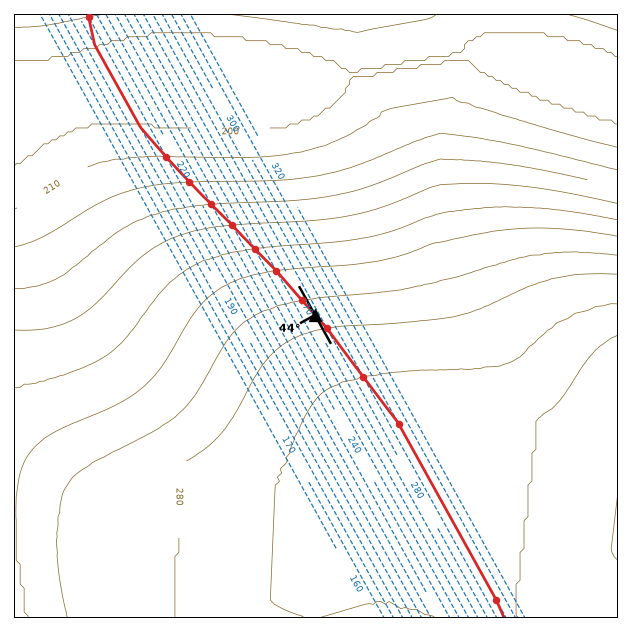
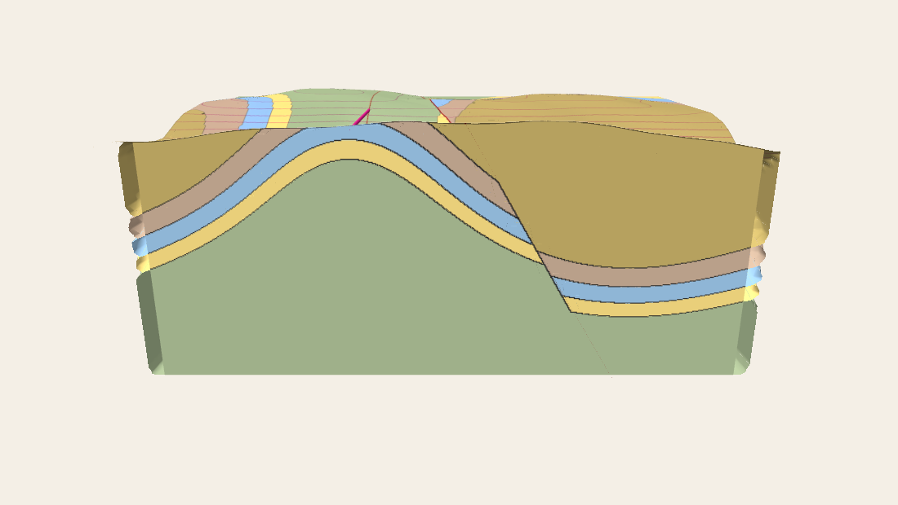

圖 2－通過同一點、沿傾向的剖面。虛線：層面；橘色：上層（地表高於層面）；藍色：下層。
依據露頭點位的位態（傾角／傾向）與數值地形（DEM），以構造等高線原理預判地層邊界的露頭線， 再由使用者編修後的邊界線與斷層產生地質圖，並進一步建立 3D 地質模型與地質剖面。
| ① 露頭點位 ＋DEM＋斷層 | → | ② 繪製地層邊界預判線 （暫存圖層） | → | ③ 於 QGIS 中 編修預判線 | → | ④ 產生地質圖 （geology 多邊形） | → | ⑤ 3D 模型與剖面 （GeoPackage、CAD、3D 檢視器） |
兩項工具位於選單 外掛 ▸ 地層邊界自動追蹤、工具列，以及處理工具箱（群組「地質圖繪製」）， 因此也可以批次執行或放入圖形化模型中。
在短距離內，地層界面可視為一個平面。露頭點 P0(x0, y0) 位於地表， 其高程 z0 由 DEM 讀取；若傾角為 δ、傾向為 α，則通過該點的地層面為
zs(x, y) = z0 − tan δ · [ (x − x0) sin α + (y − y0) cos α ]
地層面的構造等高線（層面上的等高線）平行於走向，等高距 h 時的水平間距為 h / tan δ。 構造等高線與同高程的地形等高線相交之處，就是地層界面出露於地表的位置；把這些交點連起來即為露頭線。
本程式不只在等高線高程上求交點，而是在每個 DEM 網格計算地表與層面的高差
F(x, y) = DEM(x, y) − zs(x, y)
並追蹤 F = 0 的連續線，由點位往兩側延伸（使用 GDAL 等值線產生器，於網格間線性內插）。

因此預判線會隨地形在溪谷處彎入、山脊處繞出（V 字法則）：傾角愈緩，線形愈貼近等高線； 垂直地層則為直線。
具有相同上層與下層代號、且位於同一斷塊的點位屬於同一條地層邊界。程式以反距離加權方式混合各點的層面：
z(x, y) = Σ wi zi(x, y) / Σ wi， wi = 1 / dip
zi 為第 i 點的層面，di 為與該點的距離，p 為「混合權重次方」（預設 4）。 此曲面通過每一個點位，且在點位處保有該點的位態；點位之間位態逐漸變化，因此可以繞過褶皺樞紐或鼻部。 所得的 F = 0 線會一次通過所有點位，使同一邊界的點位以端點相接。若同一邊界仍分成數段（例如 DEM 無資料處）， 自由端點距離小於「同一邊界線段端點相接的最大間距」者，會以直線段相接。
另一種方法「各點位獨立（單一層面）」只以各點本身的層面追蹤，適合用來檢查個別位態資料。

斷層與 DEM 圖框把圖幅切成數個斷塊。點位只在同一斷塊內混合，預判線也只保留在所屬斷塊內， 所以遇到斷層即停止，且端點恰好落在斷層線上。未完整切穿斷塊、在圖幅內尖滅的斷層， 仍會在交會處切斷預判線。
程式在每條線的左右兩側檢查 F 的正負，並在欄位 upper_side 記錄 L 或 R：
由線的起點往終點看，上層位於左側或右側。倒轉層（overturned = 1）則左右對調。
有了這個欄位，產生地質圖時不需其他資料即可判定多邊形的地層。
編修時若反轉線的方向，請同時對調 L／R；若新增線段，請填入 unit_u、unit_d，
已知時也填 upper_side。
upper_side 側的多邊形得 unit_u，
另一側得 unit_d（以線段長度加權）。與斷層重合的線段不計。unit_code 的 bedding）為所在的多邊形投票，且判定優先。upper_side 的線，由已知的一側推定另一側
（U/D 邊界一側為 U，另一側即為 D）。推定不會跨越斷層。unit_name, strat_order, series, thick_m, kind 等屬性與圖例樣式由範本圖層（如既有 geology）複製；
無範本時，strat_order 由上下層關係排序（1＝最老）。
品質檢核：欄位 qa 為 ok、conflict（周圍邊界判定互相矛盾，通常是缺口或交叉）、
propagated（跨線推定）、unassigned（未判定）。第二個輸出「未閉合端點」標示沒有接到任何線的端點，
請補接後重新執行。
| 圖層 | 類型 | 欄位（預設名稱） |
|---|---|---|
| 地層邊界露頭點位 | 點 | dip 傾角（0–90°）、dip_dir 傾向（0–360°；或依右手定則的走向）、
unit_code_u 上層代號、unit_code_d 下層代號、overturned 倒轉（0/1，選填） |
| DEM | 網格（GDAL 檔案） | 以公尺為單位的投影座標系統；解析度決定線的細緻程度 |
| 斷層 | 線 | 欄位不拘；須延伸到圖框或其他斷層，才能切分斷塊 |
| 地層代號點位（選填） | 點 | unit_code |
| 範本（選填） | 面 | unit_code, unit_name, strat_order, series, thick_m, kind |
各圖層可使用不同座標系統，繪製預判線時轉換至 DEM 座標系統，產生地質圖時轉換至邊界線的座標系統。
qa 欄位與「未閉合端點」圖層，修正線段後可再次執行步驟 4。| 參數 | 說明 |
|---|---|
| 方位欄位內容 | 傾向，或走向（右手定則：傾向＝走向＋90°）。 |
| 方法 | 「同一邊界的點位相接」（預設）或「各點位獨立」。 |
| 同一邊界線段端點相接的最大間距 | 同一邊界的自由端點在此距離（圖面單位）內以直線相接；0＝不相接。位於斷層或圖框上的端點不相接。 |
| 混合權重次方（進階） | 值愈大，各點本身的層面在點位周圍保持得愈遠；值愈小，曲面愈平滑、愈接近平均。建議 3–6。 |
| 由點位最大延伸距離（進階） | 限制預判線距點位的距離（0＝整個斷塊）。 |
| 保留未通過露頭點的分支（進階） | 一併保留同一曲面與地表的其他交線（例如溪谷對岸的同一界面）。 |
| 最短線長（進階） | 刪除過短的碎線。 |
| 參數 | 說明 |
|---|---|
| 上層／下層代號欄位、上層所在側欄位 | 預設 unit_u、unit_d、upper_side（由預判線工具寫入）。 |
| 圖幅範圍 | 地質圖的圖框；空白時使用線段的範圍。 |
| 線段端點接合容許距離 | 端點距其他線段小於此值即接合（圖面單位，預設 5）。 |
| 併入鄰區的未判定碎片面積上限（進階） | 小於此面積的未判定多邊形併入鄰區。 |
| 依地層合併多邊形 | 每個地層一筆（多重）多邊形，與範例 geology 相同。 |
| 圖層 | 欄位 | 內容 |
|---|---|---|
| 地層邊界預判線 | bnd_id | 線編號 |
| unit_u / unit_d | 上層／下層代號 | |
| upper_side | L／R：沿線方向上層所在側 | |
| block_id | 斷塊編號 | |
| n_pts | 線通過的露頭點數 | |
| pt_ids | 通過點位的編號 | |
| method | blend（混合）／individual（獨立） | |
| length_m | 長度 | |
| 地質圖 geology | unit_code … kind | 與範例 geology 圖層相同的欄位結構 |
| qa | ok／conflict／propagated／unassigned | |
| area_m2 | 面積 |
「產生 3D 地質模型與地質剖面」工具把地質圖轉成 3D 模型，方法與網頁版 geomap-workbench 相同，採用隱式位勢場法。
series；數字大者位於不整合之上）分組，並依 strat_order（1＝最老）排序。kind = ign 的地層由地質圖垂直延伸。volume_m3）。

| 參數 | 說明 |
|---|---|
| 地質圖及其欄位 | 地層代號、層序、名稱、層系、厚度、岩類（sed／ign）。 |
| 斷層：傾角／傾向欄位 | 斷層面位態（空白時預設傾角 60°）。 |
| 位態點位 1、2 | 傾角、傾向（或走向）、所屬地層（選填，否則取點位所在的地層）、倒轉。 |
| 剖面線 | 每條線產生一個剖面（欄位 name，如 A-A'）；空白時自動產生一條垂直走向的剖面。 |
| 剖面垂直誇大倍率 | 剖面圖的垂直誇大。 |
| 網格大小／模型深度 | 0＝自動（圖幅寬度的 1/40；深度為最低地表以下圖幅寬度的 35%）。網格愈小愈平滑，但檔案愈大。 |
| 以地層厚度作為界面間距（進階） | 以 thick_m 固定界面間距，而不由界線推求。 |
| 褶皺軸跡（趨向、傾沒角、類型、名稱） | 褶皺樞紐處的地層面包含褶皺軸，因此沿軸跡的取樣點會成為位態條件（趨向空白＝沿軸跡方向，傾沒角空白＝0）。褶皺軸會顯示於 3D 檢視器、標示於剖面上，並存成 fold_axes_3d。 |
| 貼在地形面上的地圖圖層 | 預設為 QGIS 中目前顯示的圖層，繪製後貼在 3D 檢視器與 OBJ 的地形面上，並存成 *_map.png＋.pgw。 |
| 輸出資料夾、檔名前綴、3D CAD 格式 | 所有成果輸出至同一資料夾：前綴.gpkg、前綴_viewer.html、前綴_section_<剖面名>.qgz（每個剖面一個）、前綴_map.png＋.pgw，以及勾選的 CAD 格式：DXF（polyface mesh，每個地層一個圖層）、OBJ + MTL（含顏色與地形貼圖）、STL（每個地層一個檔案）。 |
| GeoPackage 圖層 | 內容 |
|---|---|
| units_3d | 各地層的封閉 3D 實體（MultiPolygonZ 三角網）及體積 |
| horizons_3d／faults_3d／terrain_3d | 地層界面、斷層面、依地層著色的地形面 |
| fold_axes_3d | 貼合地形面的褶皺軸跡 |
| section_fences_3d | 立在剖面線上的 3D 剖面（供 QGIS 3D 地圖檢視） |
| section_<剖面名>_units／_profile／_faults／_frame／_labels | 各剖面的地質剖面圖，各自成圖層；剖面座標：x＝自起點起算的距離（0 起），y＝高程×垂直誇大 |
| section_lines／model_info | 地圖上的剖面線；參數、界面場值與警告 |
剖面專案：每條剖面線在 GeoPackage 中都有各自的圖層（section_<剖面名>_units／_profile／_faults／_frame／_labels，如 section_A_A_units），並各自存成 前綴_section_<剖面名>.qgz，可分別開啟預覽。每個剖面使用自己的座標：x＝自剖面起點起算的距離（左緣為 0），y＝高程（垂直誇大不為 1 時乘上倍率），因此地形線左端的 y 值即為剖面起點的地表高程。每個專案只包含該剖面的地質剖面圖（含圖例的地層、地形線、斷層、褶皺標示、圖框、刻度與標註）及一個 A3 列印版面，可直接輸出 PDF。第一個剖面專案會另開一個 QGIS 視窗，目前的專案不會被關閉或更動。
3D 檢視器：前綴_viewer.html（three.js，可離線使用）可切換各地層、調整透明度與垂直誇大、東西／南北向切割，以及剖面切割：選擇剖面與要保留的一側，模型即沿剖面線切開，切面以剖面圖呈現，視角也會轉向切面。網址後加 #cut=0:L（或 0:R）可直接以切割狀態開啟，加 #nopanel 可隱藏面板以便截圖。

授權：GNU GPL v2 或更新版本。